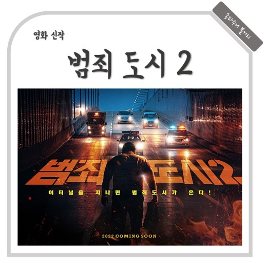

범죄도시2
개봉일: 2022년 5월 18일 (대한민국)
night
감독:이상용
줄연진:마동석,손석구,최기화,박지환,허동원,하준,정재광,남문철
가리봉동 소탕작전 후 4년 뒤, 금천서 강력반은 베트남으로 도주한 용의자를 인도받아 오라는 미션을 받는다. 괴물형사 ‘마석도’(마동석)와 ‘전일만’(최귀화) 반장은 현지 용의자에게서 수상함을 느끼고, 그의 뒤에 무자비한 악행을 벌이는 ‘강해상’(손석구)이 있음을 알게 된다. ‘마석도’와 금천서 강력반은 한국과 베트남을 오가며 역대급 범죄를 저지르는 ‘강해상’을 본격적으로 쫓기 시작하는데... 나쁜 놈들 잡는 데 국경 없다! 통쾌하고 화끈한 범죄 소탕 작전이 다시 펼쳐진다!